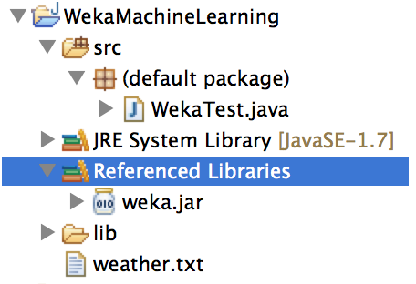

A Simple Machine Learning Example in Java
This is a "Hello World" example of machine learning in Java. It simply give you a taste of machine learning in Java.
Environment
Java 1.6+ and Eclipse
Step 1: Download Weka library
Download page: http://www.cs.waikato.ac.nz/ml/weka/snapshots/weka_snapshots.html
Download stable.XX.zip, unzip the file, add weka.jar to your library path of Java project in Eclipse.
Step 2: Prepare Data
Create a txt file "weather.txt" by following the following format:
@relation weather
@attribute outlook {sunny, overcast, rainy}
@attribute temperature numeric
@attribute humidity numeric
@attribute windy {TRUE, FALSE}
@attribute play {yes, no}
@data
sunny,85,85,FALSE,no
sunny,80,90,TRUE,no
overcast,83,86,FALSE,yes
rainy,70,96,FALSE,yes
rainy,68,80,FALSE,yes
rainy,65,70,TRUE,no
overcast,64,65,TRUE,yes
sunny,72,95,FALSE,no
sunny,69,70,FALSE,yes
rainy,75,80,FALSE,yes
sunny,75,70,TRUE,yes
overcast,72,90,TRUE,yes
overcast,81,75,FALSE,yes
rainy,71,91,TRUE,no
This dataset is from weka download package. It is located at "/data/weather.numeric.arff". The file extension name is "arff", but we can simply use "txt".
Step 3: Training and Testing by Using Weka
This code example use a set of classifiers provided by Weka. It trains model on the given dataset and test by using 10-split cross validation. I will explain each classifier later as it is a more complicated topic.
import java.io.BufferedReader; import java.io.FileNotFoundException; import java.io.FileReader; import weka.classifiers.Classifier; import weka.classifiers.Evaluation; import weka.classifiers.evaluation.NominalPrediction; import weka.classifiers.rules.DecisionTable; import weka.classifiers.rules.PART; import weka.classifiers.trees.DecisionStump; import weka.classifiers.trees.J48; import weka.core.FastVector; import weka.core.Instances; public class WekaTest { public static BufferedReader readDataFile(String filename) { BufferedReader inputReader = null; try { inputReader = new BufferedReader(new FileReader(filename)); } catch (FileNotFoundException ex) { System.err.println("File not found: " + filename); } return inputReader; } public static Evaluation classify(Classifier model, Instances trainingSet, Instances testingSet) throws Exception { Evaluation evaluation = new Evaluation(trainingSet); model.buildClassifier(trainingSet); evaluation.evaluateModel(model, testingSet); return evaluation; } public static double calculateAccuracy(FastVector predictions) { double correct = 0; for (int i = 0; i < predictions.size(); i++) { NominalPrediction np = (NominalPrediction) predictions.elementAt(i); if (np.predicted() == np.actual()) { correct++; } } return 100 * correct / predictions.size(); } public static Instances[][] crossValidationSplit(Instances data, int numberOfFolds) { Instances[][] split = new Instances[2][numberOfFolds]; for (int i = 0; i < numberOfFolds; i++) { split[0][i] = data.trainCV(numberOfFolds, i); split[1][i] = data.testCV(numberOfFolds, i); } return split; } public static void main(String[] args) throws Exception { BufferedReader datafile = readDataFile("weather.txt"); Instances data = new Instances(datafile); data.setClassIndex(data.numAttributes() - 1); // Do 10-split cross validation Instances[][] split = crossValidationSplit(data, 10); // Separate split into training and testing arrays Instances[] trainingSplits = split[0]; Instances[] testingSplits = split[1]; // Use a set of classifiers Classifier[] models = { new J48(), // a decision tree new PART(), new DecisionTable(),//decision table majority classifier new DecisionStump() //one-level decision tree }; // Run for each model for (int j = 0; j < models.length; j++) { // Collect every group of predictions for current model in a FastVector FastVector predictions = new FastVector(); // For each training-testing split pair, train and test the classifier for (int i = 0; i < trainingSplits.length; i++) { Evaluation validation = classify(models[j], trainingSplits[i], testingSplits[i]); predictions.appendElements(validation.predictions()); // Uncomment to see the summary for each training-testing pair. //System.out.println(models[j].toString()); } // Calculate overall accuracy of current classifier on all splits double accuracy = calculateAccuracy(predictions); // Print current classifier's name and accuracy in a complicated, // but nice-looking way. System.out.println("Accuracy of " + models[j].getClass().getSimpleName() + ": " + String.format("%.2f%%", accuracy) + "\n---------------------------------"); } } } |
The package view of your project should look like the following:

References:
1. http://www.cs.umb.edu/~ding/history/480_697_spring_2013/homework/WekaJavaAPITutorial.pdf
2. http://www.cs.ru.nl/P.Lucas/teaching/DM/weka.pdf
<pre><code> String foo = "bar"; </code></pre>
-
Sujaira Moughawiche
-
sanjaya
-
pritesh
-
Seetesh Hindlekar
-
Rohit Gupta
-
Nemo
-
jadedandbemused
-
Hossein
-
White
-
Pratibind Jha
-
junaid ahmad
-
Giri